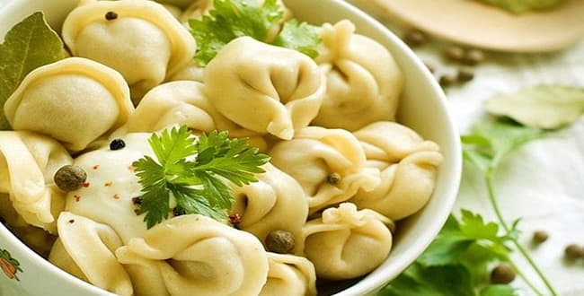

Классические чебурекиИнгредиенты
Для теста: 500 г пшеничной муки, 130 мл воды, 1 яйцо, 50 мл растительного масла, 5 г сахара, 5 г соли.
Для фарша: 400 г баранины, 200 г репчатого лука, 100 г курдючного сала, 120 мл кефира, 2 г молотого кардамона, 3 г измельченного имбиря, 3 г черного молотого перца, соль по вкусу.
Для смазывания теста: 1 яйцо.
Для жаренья: 180 мл растительного масла.
Для подачи: 250 мл острого соевого уксуса.
Способ приготовления
Приготовить тесто. Воду вскипятить с солью, сахаром и маслом, немедленно засыпать в нее часть муки при непрерывном помешивании и замесить тесто. Когда оно немного остынет, добавить яйцо и перемешать. Постепенно всыпать оставшуюся муку и вымесить тесто однородной консистенции. Оно не должно липнуть к рукам, если же это происходит, то можно добавить еще немного муки. Затем тесто нужно накрыть чистым полотенцем и оставить в тепле на 1–2 ч. Пока тесто выстаивается, его нужно 1 раз примять. Готовое тесто нарезать небольшими кусочками размером с мячик для настольного тенниса. Каждый кусочек раскатать в лепешку толщиной 1 мм и диаметром с блюдце или небольшую тарелку.
Приготовить фарш. Баранину промыть, обсушить, нарезать мелкими кубиками и отбить. Репчатый лук очистить, вымыть и мелко нарезать и отбить толкушкой вместе с солью. Смешать мясо и лук, добавить кефир, черный молотый перец, кардамон, имбирь, соль и тщательно перемешать. Кефир хорошо связывает сырой фарш и не дает ему растечься, а в готовом изделии он практически не чувствуется.
Края лепешек смазать яйцом. Приготовленный фарш выложить на эти лепешки, сверху положить по кусочку сала. Сложить лепешки пополам в форме полумесяца и края защипнуть руками, вилкой или специальной машинкой, не оставляя прорех или щелей. Разогреть растительное масло в глубокой сковороде, жарить чебуреки с обеих сторон до образования золотисто-коричневого цвета. Подавать к столу в горячем виде, переложив на блюдо. Отдельно подать в соуснике острый соевый соус.
Чебуреки с мясом и сыромИнгредиенты
Для теста: 500 г пшеничной муки, 120 мл воды, 5 г сахара, 5 г дрожжей, 100 мл растительного масла, 5 г соли.
Для фарша: 250 г баранины, 250 г свинины, 250 г репчатого лука, 100 мл кефира, 3 г черного молотого перца, соль по вкусу.
Для жаренья: 150 мл растительного масла.
Для подачи: 100 г сливочного масла, 100 г тертого сыра.
Способ приготовления
Приготовить тесто. В глубокой миске смешать соль, сахар и сухие дрожжи. Влить теплую воду, растительное масло, размешать и затем при непрерывном помешивании всыпать муку, вымесить тесто. Месить тесто до тех пор, пока оно не перестанет прилипать к рукам. Затем накрыть его полотенцем, оставить при комнатной температуре на 50–60 мин. Готовое тесто разделать на кусочки и раскатать их в круглые лепешки диаметром 15 см.
Приготовить фарш. Баранину и свинину промыть, обсушить, пропустить через мясорубку вместе с очищенным и вымытым репчатым луком. Добавить кефир, черный молотый перец и соль. Все тщательно перемешать и убрать в холодильник на 20 мин. Можно при разделывании фарша добавить в него немного колотого льда. Приготовленный фарш выложить на одну сторону лепешки из теста, равномерно распределить по поверхности, накрыть другой стороной, края защипнуть.
На сковороде разогреть растительное масло и жарить в нем чебуреки с обеих сторон до образования золотистой корочки. Переворачивать чебуреки лучше деревянной лопаткой, чтобы не проколоть тесто. Готовые чебуреки переложить на блюдо, смазать сливочным маслом и посыпать тертым сыром.
Чебуреки с мясом и грибамиИнгредиенты
Для теста: 500 г пшеничной муки, 200 мл молока, 50 г жира, 5 г сахара, 10 г дрожжей, 5 г соли.
Для начинки: 300 г говядины, 200 г свежих шампиньонов, 150 г репчатого лука, 80 г растительного масла, 80 мл жирного мясного бульона, 4 г черного молотого перца, соль по вкусу.
Для жаренья: 150 г жира.
Способ приготовления
Приготовить тесто. В глубокой миске смешать соль, сахар и сухие дрожжи. Влить теплое молоко и растопленный жир, размешать и при непрерывном помешивании всыпать муку. Вымесить тесто, накрыть его полотенцем, оставить при комнатной температуре на 50–60 мин. Готовое тесто разделать на кусочки, раскатать их в круглые лепешки диаметром 15 см.
Приготовить фарш. Говядину промыть, обсушить, пропустить через мясорубку. Шампиньоны очистить, промыть, обсушить, нашинковать вместе с очищенным и вымытым репчатым луком. Обжарить грибы и лук в растительном масле, затем дать остыть и соединить с мясом. Добавить мясной бульон, черный молотый перец и соль. Все тщательно перемешать и убрать в холодильник на 20 мин.
Затем выложить фарш на лепешки из теста, примять и свернуть лепешки пополам в форме полумесяца, расплющить, защипнуть края.
На сковороде разогреть жир и обжарить в нем чебуреки с обеих сторон до образования золотистой корочки. Готовые чебуреки переложить на блюдо, подать к столу в горячем виде.
Чебуреки с мясом, грибами и рисомИнгредиенты
Для теста: 500 г пшеничной муки, 120 мл воды, 60 мл растительного масла, 1 яйцо, 5 г сахара, 5 г соли.
Для фарша: 150 г свинины, 150 г говядины, 200 г жареных грибов, 100 г сваренного до полуготовности риса, 100 г репчатого лука, 70 мл воды, 3 г черного молотого перца, 2 г красного молотого перца, 2 г молотого кардамона, соль по вкусу.
Для жаренья: 150 мл растительного масла. Для подачи: 80 г зелени укропа и петрушки.
Способ приготовления
Приготовить тесто. Вскипятить воду с растительным маслом, добавив соль и сахар. Затем в горячую жидкость всыпать при непрерывном помешивании муку (использовать У3) и замесить тесто. Когда тесто остынет, добавить яйцо и оставшуюся муку, вымешивать до тех пор, пока тесто не перестанет липнуть к рукам. После завернуть тесто в целлофановый пакет и положить в холодильник на 1 ч. Подготовленное тесто разрезать на кусочки и раскатать их в лепешки диаметром 12–15 см.
Приготовить фарш. Свинину и говядину промыть, обсушить, пропустить через мясорубку вместе с очищенным и вымытым репчатым луком. Смешать фарш с жареными грибами и сваренным до полуготовности рисом. Добавить воду, черный и красный молотый перец, кардамон и соль. Все тщательно перемешать и убрать в холодильник на 20 мин.
После этого выложить фарш на лепешки из теста, слепить чебуреки. Жарить их в горячем растительном масле до готовности. Затем переложить чебуреки на блюдо и посыпать промытой, измельченной зеленью укропа и петрушки.
Чебуреки с мясом индейкиИнгредиенты
Для теста: 500 г пшеничной муки, 120 мл воды, 1 яичный желток, 5 г сахара, 60 мл растительного масла, 5 г соли.
Для фарша: 350 г филе индейки, 100 г болгарского перца, 50 г перца чили, 100 г моркови, 40 мл лимонного сока, 3 г черного молотого перца, соль по вкусу.
Для жаренья: 140 мл растительного масла.
Способ приготовления
Приготовить тесто. Просеять муку в миску. Желток смешать с водой, добавить соль, сахар и размешать. Эту смесь влить в муку и вымесить тесто. Затем добавить растительное масло и замесить тесто. Положить его в целлофановый пакет и оставить в холодильнике на 30–40 мин. Подготовленное тесто разделать на кусочки, из которых раскатать круглые лепешки для чебуреков.
Приготовить фарш. Филе индейки промыть, отварить до полуготовности, затем дать остыть и пропустить через мясорубку. Добавить к фаршу очищенные, вымытые и мелко нарезанные болгарский перец и перец чили. Морковь очистить, вымыть, натереть на терке, слегка отжать и положить в фарш. Влить сюда же лимонный сок, положить молотый перец и соль, тщательно перемешать.
Выложить этот фарш на лепешки из теста, слепить плоские чебуреки, тщательно защипнув края. Жарить их во фритюре на среднем огне до образования золотисто-коричневой корочки. Готовые чебуреки переложить на тарелку и подать к столу горячими. Отдельно можно подать кислое молоко, кефир и т. п.
Чебуреки с говядиной, картофелем, морковью и болгарским перцемИнгредиенты
Для теста: 500 г пшеничной муки, 120 мл воды, 1 яйцо, 5 г сахара, 50 мл растительного масла, 5 г соли.
Для начинки: 400 г отварной говядины, 100 г вареного картофеля, 60 г моркови, 100 г репчатого лука, 50 г корней сельдерея, 60 г болгарского перца, 5 горошин черного перца, 5 г натертого хрена, 80 г сметаны, соль по вкусу.
Для жаренья: 120 г жира.
Способ приготовления
Замесить тесто. Для этого соль и сахар растворить в горячей воде, добавить растительное масло. Затем эту смесь влить в муку, замесить тесто, затем добавить яйцо и тщательно вымесить. Оставить тесто на разделочном столе, прикрыв полотенцем, на 30 мин. Затем разделать на лепешки.
Приготовить фарш. Отварную говядину мелко нарубить, смешать с вареным картофелем, предварительно очищенным и размятым до состояния пюре. Добавить в фарш очищенные, вымытые и мелко нарубленные репчатый лук и болгарский перец. Морковь и корни сельдерея очистить, вымыть, натереть на терке, слегка отжать и положить в фарш. Прибавить горошины черного перца, хрен, сметану и соль. Все ингредиенты тщательно перемешать, положить в пакет и убрать в холодильник на 20 мин.
Фарш выложить на лепешки из теста, слепить чебуреки в форме полумесяца. Жарить их в разогретом жире до готовности. Подавать к столу горячими.
Чебуреки с мясом курицы и коньякомИнгредиенты
Для теста: 500 г пшеничной муки, 120 мл воды, 1 яйцо, 5 г сахара, 50 мл растительного масла, 5 г соли.
Для фарша: 400 г филе курицы, 50 г шпика, 100 г репчатого лука, 50 мл коньяка, 50 г пшеничной муки, 5 г измельченного чеснока, 50 г сливочного масла, 3 г черного молотого перца, 2 г молотой гвоздики, 1 измельченный лавровый лист, 1 г молотого кориандра, соль по вкусу.
Для жаренья: 150 г сливочного масла. Для подачи: 50 мл сухого вина, 60 г тертого сыра.
Способ приготовления
Замесить тесто по вышеописанному рецепту.
Приготовить фарш. Филе промыть, обсушить, нарезать небольшими кусочками. Пересыпать их солью, пряностями, залить коньяком, добавить чеснок и припустить на медленном огне на растопленном, измельченном шпике до полуготовности, затем размять до состояния пюре и дать остыть.
Добавить очищенный, вымытый, нашинкованный и спассерованный в сливочном масле вместе с репчатым луком и мукой, все тщательно перемешать.
Фарш охладить и выложить на лепешки из теста. Слепить чебуреки и обжарить их в горячем сливочном масле до готовности.
Подавать к столу, переложив на блюдо, сбрызнув вином и посыпав тертым сыром.
Чебуреки с бараниной, красным вином, гранатовым соком и имбиремИнгредиенты
Для теста: 500 г пшеничной муки, 120 мл воды, 5 г соли, 5 г сахара, 1 яичный желток, 50 мл растительного масла.
Для начинки: 500 г баранины, 150 г репчатого лука, 50 мл красного сухого вина, 50 г измельченного свежего имбиря, 100 мл гранатового сока, 4 г красного молотого перца, соль по вкусу.
Для жаренья: 150 г сливочного масла.
Способ приготовления
Замесить тесто. Смешать горячую воду с сахаром, солью и растительным маслом. Влить эту жидкость в муку, замесить тесто. Когда оно остынет, добавить яичный желток. Оставить тесто для расстойки на 40 мин, затем разделать на лепешки.
Приготовить фарш. Баранину промыть, нарезать небольшими кусочками, посолить, поперчить, залить вином и гранатовым соком, добавить имбирь и очищенный, вымытый, нашинкованный репчатый лук. Все перемешать и тушить на медленном огне под крышкой в течение 20–25 мин. Дать мясу остыть, затем размять его до состояния пюре и положить на 20 мин в холодильник.
Фарш выложить на лепешки из теста, слепить чебуреки в форме полумесяца. Обжаривать их с обеих сторон в разогретом сливочном масле до образования румяной корочки.
Перед подачей к столу переложить чебуреки на блюдо.
Чебуреки с мясом уткиИнгредиенты
Для теста: 500 г пшеничной муки, 200 мл теплого молока, 5 г соли.
Для начинки: 400 г филе утки, 100 г репчатого лука, 70 г томатной пасты, 20 мл столового разбавленного уксуса, 50 мл белого сухого вина, 15 мл лимонного сока, 4 г молотого чеснока, 3 г черного молотого перца, 50 г сливочного масла, соль по вкусу.
Для жаренья: 120 мл растительного масла.
Способ приготовления
Замесить тесто из муки, теплого молока и соли. Оставить его на 20 мин для расстойки, затем разделать на круглые лепешки.
Приготовить начинку. Филе промыть, обсушить, нарезать небольшими кусочками, положить в глубокую сковороду, смазанную сливочным маслом (использовать половину). Репчатый лук очистить, вымыть, нашинковать, обжарить в оставшемся сливочном масле, затем смешать с томатной пастой, уксусом, вином, лимонным соком, чесноком, молотым перцем и солью. Полить смесью мясо. Накрыть сковороду крышкой и тушить мясо в течение 20–25 мин. Затем дать ему остыть и размять до состояния пюре. Фарш выложить на лепешки из теста и обжаривать их в горячем растительном масле до образования румяной корочки.
Подавать к столу в горячими, переложив на блюдо.
Чебуреки c мясом, грибами и языкомИнгредиенты
Для теста: 500 г пшеничной муки, 120 мл воды, 150 г сливочного масла, соль по вкусу.
Для фарша: 300 г баранины, 150 г жареных грибов, 150 г вареного языка, 100 г тертого сыра, 1 яйцо, 100 г свежих огурцов, 50 г зелени петрушки, 3 г черного молотого перца, соль по вкусу.
Для жаренья: 150 г сливочного масла.
Способ приготовления
Приготовить тесто. Просеянную муку заварить подсоленной кипящей водой, замесить тесто. Когда остынет, добавить в него размягченное масло, вымесить и убрать в холодильник на 20 мин. Разделать тесто на лепешки.
Приготовить фарш. Баранину промыть, обсушить, мелко нарубить, смешать с яйцом, добавить соль и молотый перец, перемешать. Жареные грибы соединить с измельченным вареным языком, тертым сыром, посолить, поперчить, перемешать. Свежие огурцы вымыть, обсушить, измельчить и слегка отжать. Смешать их с промытой и измельченной зеленью петрушки, посолить и поперчить.
Выложить три вида фарша на лепешки из теста послойно, слепить чебуреки. Обжарить их в горячем сливочном масле до готовности. Подавать к столу горячими.
Чебуреки с ветчиной, колбасой, сыром и помидорамиИнгредиенты
Для теста: 500 г пшеничной муки, 150 мл воды, 50 мл растительного масла, 1 яйцо, 5 г сахара, 5 г соли.
Для начинки: 200 г вареной ветчины, 100 г сырокопченой колбасы, 100 г тертого сыра, 200 г помидоров, 80 г репчатого лука, 3 г черного молотого перца, 60 мл белого сухого вина, 20 г топленого масла, соль по вкусу.
Для жаренья: 200 мл растительного масла.
Способ приготовления
Замесить тесто. Смешать горячую воду с сахаром, солью и растительным маслом. Влить эту жидкость в муку, замесить тесто. Когда остынет, добавить яйцо, снова вымесить. Оставить для расстойки на 40 мин, разделать на лепешки.
Приготовить начинку. Вареную ветчину и сырокопченую колбасу мелко нарезать, смешать с тертым сыром. Лук очистить, нашинковать, обжарить в топленом масле, добавить мелко нарезанные помидоры, потушить ингредиенты вместе, посолить и поперчить. Когда остынет, соединить с фаршем, влить вино, перемешать. Фарш выложить на лепешки из теста. Слепить чебуреки и обжарить их в горячем растительном масле до румяной корочки с обеих сторон. Подавать к столу горячими на блюде.
Крымские чебуреки из смешанного фарша с базиликомИнгредиенты
Для теста: 500 г пшеничной муки, 150 мл воды, 50 мл растительного масла, 1 яйцо, 5 г сахара, 5 г соли.
Для фарша: 250 г баранины, 200 г говядины, 150 г репчатого лука, 30 г измельченной зелени базилика, 2 г молотого кардамона, 3 г черного молотого перца, 80 мл кефира, соль по вкусу.
Для жаренья: 150 г сливочного масла. Для подачи: 50 г зелени базилика.
Способ приготовления
Замесить тесто и сделать лепешки для чебуреков по вышеописанному рецепту.
Приготовить фарш. Баранину и говядину промыть, обсушить, пропустить дважды через мясорубку вместе с очищенным и вымытым репчатым луком. Добавить в фарш измельченный базилик, кардамон, черный молотый перец, кефир и соль. Все ингредиенты тщательно перемешать.
Поставить фарш в холодильник на 20 мин. После этого подготовленный фарш выложить на лепешки из теста. Слепить чебуреки и обжарить их с обеих сторон в горячем сливочном масле.
Готовые чебуреки переложить на блюдо и подать к столу горячими, украсив промытыми веточками базилика.
Чебуреки из телятины с чеснокомИнгредиенты
Для теста: 500 г пшеничной муки, 200 мл воды, 5 г соли.
Для начинки: 500 г телятины, 150 г репчатого лука, 5 г измельченного чеснока, 100 мл кефира, 4 г черного молотого перца, соль по вкусу.
Для жаренья: 150 г сливочного масла. Для подачи: 60 г зелени петрушки.
Способ приготовления
Приготовить тесто. Муку заварить подсоленной кипящей водой, замесить тесто. Оставить на 20 мин для расстойки, разделать на лепешки.
Приготовить начинку. Телятину мелко нарезать, смешать с очищенным и нашинкованным репчатым луком. Добавить в фарш чеснок, кефир, молотый перец и соль. Все ингредиенты тщательно перемешать и убрать на холод на 20 мин.
Подготовленный фарш выложить на лепешки из теста, слепить чебуреки в форме полумесяца, плотно защипнув края.
Обжарить чебуреки в горячем сливочном масле до золотисто-коричневой корочки с обеих сторон. Готовые чебуреки переложить на блюдо и посыпать промытой и измельченной зеленью петрушки. Подавать к столу горячими.
Чебуреки с говяжьей печенью, шпиком, грибами, сметаной и коньякомИнгредиенты
Для теста: 500 г пшеничной муки, 150 мл воды, 50 мл растительного масла, 1 яйцо, 5 г сахара, 5 г соли.
Для фарша: 300 г говяжьей печени, 100 г шпика, 200 г свежих грибов, 100 г репчатого лука, 50 г сливочного масла, 50 мл греческого коньяка, 80 г сметаны, 1 г молотого майорана, 1 г молотой корицы, 1 г молотой гвоздики, 2 г черного молотого перца, соль по вкусу.
Для жаренья: 150 мл растительного масла.
Для подачи: 60 г укропа и петрушки.
Способ приготовления
Замесить тесто. Смешать горячую воду с сахаром, солью и растительным маслом. Влить эту жидкость в муку, замесить тесто. Когда остынет, добавить яйцо, снова вымесить. Оставить для расстойки на 40 мин, положив в пакет. Затем разделать тесто на круглые лепешки.
Приготовить фарш. Говяжью печень промыть, нарезать небольшими кусочками, обжарить в измельченном и растопленном шпике, затем влить коньяк, положить все специи, добавить сметану и соль, тушить на медленном огне под крышкой в течение 10–15 мин. Затем дать мясу остыть и размять в пюре. Репчатый лук и грибы очистить, вымыть, дать обсохнуть, затем мелко нарубить и обжарить в сливочном масле. Когда обжарка остынет, соединить ее с мясным фаршем, все тщательно перемешать.
Фарш выложить на лепешки из теста, слепить чебуреки в форме полумесяца, защипнув края. Обжарить во фритюре до готовности.
Готовые чебуреки переложить на блюдо и украсить веточками укропа и петрушки.
Чебуреки с куриной печенью и ветчинойИнгредиенты
Для теста: 400 г пшеничной муки, 120 мл воды, 40 мл растительного масла, 1 яйцо, 5 г соли.
Для фарша: 200 г куриной печени, 120 г ветчины, 80 г репчатого лука, 40 г сливочного масла, 50 г сметаны, 2 г красного молотого перца, соль по вкусу.
Для жаренья: 120 мл растительного масла.
Для подачи: 50 г зелени кинзы.
Способ приготовления
Замесить тесто. Смешать горячую воду с солью и растительным маслом. Влить эту жидкость в муку, замесить тесто. Когда оно остынет, добавить яйцо, снова вымесить. Оставить тесто для расстойки на 1 ч, положив в пакет. Затем разделать тесто на круглые лепешки.
Приготовить фарш. Печень промыть, нарезать небольшими кусочками, обжарить в растительном масле (20 мл) вместе с нарезанной кубиками ветчиной, положить перец, добавить сметану и соль, тушить на медленном огне под крышкой в течение 5 мин.
Затем дать фаршу остыть и размять его в пюре. Репчатый лук очистить, вымыть, дать обсохнуть, затем мелко нарубить и обжарить в сливочном масле. Когда обжарка остынет, соединить ее с фаршем, все тщательно перемешать.
Фарш выложить на лепешки из теста, слепить чебуреки в форме полумесяца, плотно защипнув края. Обжарить их в оставшемся растительном масле.
Готовые чебуреки переложить на блюдо и украсить промытой и мелко нарезанной зеленью кинзы.
Чебуреки с мясом и капустойИнгредиенты
Для теста: 500 г пшеничной муки, 1 яйцо, 150 мл воды, соль по вкусу.
Для фарша: 150 г говядины, 150 г свинины, 150 г тушеной белокочанной капусты, 50 г топленого масла, 100 г репчатого лука, 5 г черного молотого перца, соль по вкусу.
Для жаренья: 150 мл растительного масла.
Для подачи: 100 мл томатного соуса, 50 г зелени петрушки.
Способ приготовления
Приготовить крутое тесто из муки, яйца, воды и соли. Оставить его на 20 мин в тепле, затем разделать на лепешки.
Приготовить фарш. Свинину и говядину очистить от пленок, дважды пропустить через мясорубку вместе с очищенным и вымытым луком. Добавить в фарш размятую до состояния пюре тушеную капусту, топленое масло, перец и соль. Все тщательно перемешать. Выложить фарш на лепешки из теста, защипнуть края.
Обжарить чебуреки в растительном масле, выложить на блюдо, полить томатным соусом и посыпать промытой и измельченной зеленью петрушки.
Чебуреки с мясом кролика и зеленым лукомИнгредиенты
Для теста: 500 г пшеничной муки, 200 мл воды, 5 г соли.
Для начинки: 500 г мяса кролика, 150 г зеленого лука, 100 г сметаны, 5 г черного молотого перца, соль по вкусу.
Для жаренья: 150 г топленого масла.
Для подачи: 50 г зелени укропа.
Способ приготовления
Приготовить тесто. Муку заварить подсоленной кипящей водой и замесить тесто. Оставить его на 20 мин для расстойки, затем разделать на лепешки.
Приготовить начинку. Мясо кролика промыть, мелко нарезать, смешать с вымытым и нарезанным зеленым луком. Добавить в фарш сметану, перец и соль. Все ингредиенты тщательно перемешать и убрать на холод на 20 мин.
Фарш выложить на лепешки из теста, слепить чебуреки в форме полумесяца, защипнуть края.
Обжарить чебуреки в горячем топленом масле. Готовые чебуреки переложить на блюдо и посыпать измельченной зеленью укропа.
Чебуреки с мясом гуся и яблокамиИнгредиенты
Для теста: 500 г пшеничной муки, 200 мл теплого молока, 5 г соли.
Для начинки: 400 г филе гуся, 2 больших кислых яблока, 100 г репчатого лука, 70 г томатной пасты, 20 мл столового уксуса, 50 мл белого вина, 10 мл лимонного сока, 3 г красного молотого перца, 50 г сливочного масла, соль по вкусу.
Для жаренья: 120 мл растительного масла.
Способ приготовления
Замесить тесто из муки, теплого молока и соли. Оставить его на 20 мин для расстойки, затем разделать на круглые лепешки.
Приготовить начинку. Филе гуся промыть, обсушить, нарезать небольшими кусочками, положить в глубокую сковороду, смазанную сливочным маслом (использовать половину). Репчатый лук очистить, вымыть, нашинковать, обжарить в оставшемся сливочном масле, затем смешать с предварительно подготовленными и нарезанными небольшими кусочками яблоками, томатной пастой, уксусом, вином, лимонным соком, чесноком, молотым перцем и солью. Добавить смесь к мясу. Накрыть сковороду крышкой и тушить смесь в течение 15 мин. Затем дать ему остыть и размять до состояния пюре. Фарш выложить на лепешки из теста и обжарить их в горячем растительном масле.